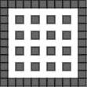

棒倒し法
実行例

ソースコード
TypeScript
解説/アルゴリズム

サイズが奇数 × 奇数の二次元配列を用意します。
配列の外側はすべて壁で埋め、内部は 1 マスおきに壁を配置していきます。
 3 行目に配置した内部の壁がありますが、それを一つずつ倒す、つまり上下左右いずれか一つに壁を作ります。
3 行目に配置した内部の壁がありますが、それを一つずつ倒す、つまり上下左右いずれか一つに壁を作ります。
この際、すでに置かれている壁のところには作らないように注意します。
 5 行目も同じように倒していきますが、上に倒してはいけない、という制約も付け加えます。
5 行目も同じように倒していきますが、上に倒してはいけない、という制約も付け加えます。
7 行目、9 行目、11 行目…と内部に配置した壁の行を 5 行目と同じように上以外の方向に壁を倒せば迷路の完成となります。